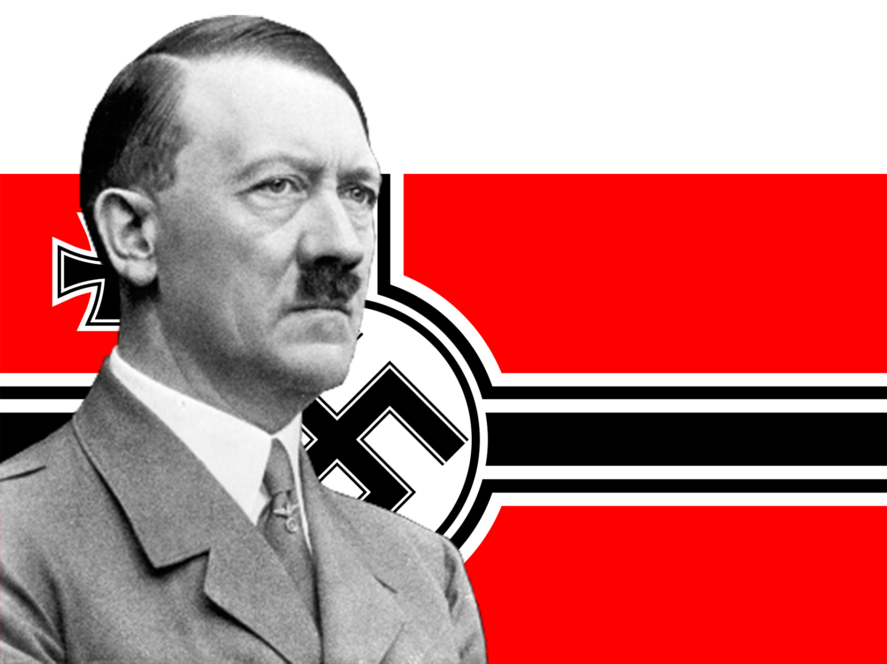

Las personalidades más influyentes
Hace 80 años, el 1 de septiembre de 1939, empezó el conflicto bélico más grande de la humanidad con más de 60 millones de muertos. El Museo de Guerra les acerca la historia de las cinco personalidades más influyentes del conflicto. Si bien en la contienda tomaron parte desde políticos, militares y soldados, entre los cuales hay cientos de ellos dignos de destacar, en esta sección se hará particular mención a Franklin Delano Roosevelt, presidente de Estados Unidos, Winston Churchill, primer ministro del Reino Unido, Adolf Hitler, canciller alemán del Tercer Reich, Benito Mussolini, primer ministro de Italia, y Iosif Stalin, presidente de la Unión Soviética.
Otros personajes influyentes que pueden destacarse, pero que serán abordados en una futura edición de la presente página son: Joseph Goebbels, ministro alemán de Propaganda e Información desde 1933 hasta 1945; Hermann Göring, ministro y comandante supremo de la luftwaffe; Hirohito, emperador japonés; Charles de Gaulle, presidente de la resistencia francesa en el exilio; Bernard Montgomery, Mariscal de Campo del Ejército Británico; Chiang Kai-shek, lider de la China Nacionalista; Karl Dönitz, nombrado Großadmiral de la Kriegsmarine el 30 de enero de 1943 y fue Presidente durante 23 días después del suicidio de Hitler; Hideki Tōjō, primer ministro japonés y lider militar desde octubre de 1941-julio de 1944.
Las potencias del Eje, también conocido como «Eje Roma–Berlín–Tokio», formaban el bando beligerante que se enfrentó a los Aliados en la Segunda Guerra Mundial. Estaba formado por Alemania, el Imperio de Japón y el Reino de Italia, y contó con la adhesión de otros países. Los Aliados fueron países opuestos oficialmente a las Potencias del Eje durante la Segunda Guerra Mundial. Al comenzar la guerra, el 1 de septiembre de 1939, la coalición enfrentada a Alemania consistía en Francia, Polonia y el Reino Unido de Gran Bretaña e Irlanda del Norte, al cual se unieron poco después, algunos países del Commonwealth, el Raj británico y el Reino de Nepal. En 1940, se unieron la Francia Libre, Dinamarca, Noruega, Bélgica, Luxemburgo, los Países Bajos, Reino de Grecia y Reino de Yugoslavia.
Hace 80 años, el 1 de septiembre de 1939, empezó el conflicto bélico más grande de la humanidad con más de 60 millones de muertos. El Museo de Guerra les acerca la historia de las cinco personalidades más influyentes del conflicto. Si bien en la contienda tomaron parte desde políticos, militares y soldados, entre los cuales hay cientos de ellos dignos de destacar, en esta sección se hará particular mención a Franklin Delano Roosevelt, presidente de Estados Unidos, Winston Churchill, primer ministro del Reino Unido, Adolf Hitler, canciller alemán del Tercer Reich, Benito Mussolini, primer ministro de Italia, y Iosif Stalin, presidente de la Unión Soviética.
¿Y quiénes más?
Otros personajes influyentes que pueden destacarse, pero que serán abordados en una futura edición de la presente página son: Joseph Goebbels, ministro alemán de Propaganda e Información desde 1933 hasta 1945; Hermann Göring, ministro y comandante supremo de la luftwaffe; Hirohito, emperador japonés; Charles de Gaulle, presidente de la resistencia francesa en el exilio; Bernard Montgomery, Mariscal de Campo del Ejército Británico; Chiang Kai-shek, lider de la China Nacionalista; Karl Dönitz, nombrado Großadmiral de la Kriegsmarine el 30 de enero de 1943 y fue Presidente durante 23 días después del suicidio de Hitler; Hideki Tōjō, primer ministro japonés y lider militar desde octubre de 1941-julio de 1944.
Franklin Delano Roosevelt
Presidente de los estados unidos

Nació el 30 de enero de 1882 en Hyde Park, Nueva York y cursó estudios en Harvard y en la Universidad de Columbia.
Inició su carrera política muy joven en las filas demócratas y tras ganar un espacio en el Senado del Estado de Nueva York, posteriormente fue Secretario de Marina, formando parte del comité conjunto de la Secretaría de Defensa de Estados Unidos.
Fue el trigésimo segundo Presidente de los Estados Unidos y el único en ganar cuatro elecciones presidenciales en la nación. Cuando asumió la presidencia Estados Unidos sufría una gran crisis, el 25% de la fuerza laboral se encontraba en el paro y el producto nacional bruto había caído a la mitad. Comenzó su mandato con la política del New Deal y en tan solo tres años los estadounidenses recuperaron su fe en las instituciones democráticas.
En 1936 volvió a salir elegido. Perdió la batalla con la Corte Suprema, pero comenzó una serie de cambios constitucionales a través de los cuales el Gobierno pudo de una forma legal controlar la economía. Dedicó mucho tiempo a la concepción de la ONU, para que en esta esfera se pudieran resolver los conflictos internacionales. Al finalizar la guerra, su salud fue en declive.
Durante su gobierno estalló la II Guerra Mundial y con el primer ministro británico Winston Churchill decidieron seguir estrategias conjuntas. Pretendía que la victoria creara el contexto para una paz duradera. Partidario de la vía diplomática con los aliados, se entrevistó en varias ocasiones con Stalin para llegar a acuerdos al finalizar la guerra como en la llamada Conferencia de Yalta.
Falleció de un derrame cerebral el 12 de abril de 1945, en Warm Springs, Georgia.
Nació el 30 de enero de 1882 en Hyde Park, Nueva York y cursó estudios en Harvard y en la Universidad de Columbia.
Inició su carrera política muy joven en las filas demócratas y tras ganar un espacio en el Senado del Estado de Nueva York, posteriormente fue Secretario de Marina, formando parte del comité conjunto de la Secretaría de Defensa de Estados Unidos.
Fue electo presidente en 1933 y ganó las próximos tres elecciones, siendo el mandatario hasta 1945. Durante su gobierno estalló la II Guerra Mundial y con el primer ministro británico Winston Churchill decidieron seguir estrategias conjuntas.
Falleció de un derrame cerebral el 12 de abril de 1945, en Warm Springs, Georgia.
Cuando asumió la presidencia Estados Unidos sufría una gran crisis, el 25% de la fuerza laboral se encontraba en el paro y el producto nacional bruto había caído a la mitad. Comenzó su mandato con la política del New Deal y en tan solo tres años los estadounidenses recuperaron su fe en las instituciones democráticas.
En 1936 volvió a salir elegido. Perdió la batalla con la Corte Suprema, pero comenzó una serie de cambios constitucionales a través de los cuales el Gobierno pudo de una forma legal controlar la economía. Dedicó mucho tiempo a la concepción de la ONU, para que en esta esfera se pudieran resolver los conflictos internacionales. Al finalizar la guerra, su salud fue en declive.
Pretendía que la victoria creara el contexto para una paz duradera. Partidario de la vía diplomática con los aliados, se entrevistó en varias ocasiones con Stalin para llegar a acuerdos al finalizar la guerra como en la llamada Conferencia de Yalta.
Winston Churchill
Primer ministro británico
Nació el 30 de noviembre de 1874, en el Blenheim Palace de St Andrew's, Inglaterra.
Estudió en Harrow donde mostró una buena aptitud para el idioma, pero no se le percibió como a un gran intelectual. Al tercer intento consigue ingresar en la Real academia militar de Sandhurst. En 1895, año del fallecimiento de su padre, se incorpora al 4º de húsares, un regimiento de caballería de elite para los hijos de la nobleza.
En 1899, tomó parte en la Guerra bóer convirtiéndose en héroe nacional al conseguir escapar tras haber sido capturado. En 1900, regresó a Inglaterra y se lanzó a la vida política. A la edad de 25 años fue elegido, por primera vez, miembro parlamentario del Partido Conservador. Durante su vida sirvió bajo seis soberanos y llegaría a convertirse en uno de los políticos más grandes de todos los tiempos.
En 1904, se pasó al Partido Liberal. En 1908, le eligieron ministro de Comercio del gabinete liberal de Herbert Henry Asquith. En la I Guerra Mundial su papel fue muy polémico debido a los problemas en la Armada y su apoyo a la trágica campaña de Gallípoli, por lo que se vio obligado a presentar su dimisión del Almirantazgo. Posteriormente Churchill decidió unirse al gobierno de coalición de Lloyd George (1917-1922).
Churchill alertó sobre el peligro del dictador alemán Adolf Hitler y cuando estalló la II Guerra Mundial fue nombrado de nuevo Primer Lord del Almirantazgo. Tras varios años sin estar en el gobierno, el 10 de mayo de 1940 le ofrecen suceder a Arthur Neville Chamberlain como primer ministro. En 1945 era un personaje admirado en todo el mundo. Sus discursos lo consagraron como uno de los grandes oradores de la historia: el conocido como The few (Los pocos), pronunciado para insuflar ánimo a los pilotos de la RAF, que en agosto de 1940 se batían en el aire con la Lufwaffe ("Nunca tantos debieron tanto a tan pocos"), o aquel de 1946, en el que, en la Universidad de Zúrich, abogó por la integración europea.
Winston Churchill falleció en Londres el 24 de enero de 1965, cuando tenía noventa años.
Nació el 30 de noviembre de 1874, en el Blenheim Palace de St Andrew's, Inglaterra.
En 1899, tomó parte en la Guerra bóer convirtiéndose en héroe nacional al conseguir escapar tras haber sido capturado. En 1900, regresó a Inglaterra y se lanzó a la vida política. A la edad de 25 años fue elegido, por primera vez, miembro parlamentario del Partido Conservador. Durante su vida sirvió bajo seis soberanos y llegaría a convertirse en uno de los políticos más grandes de todos los tiempos.
Tras varios años sin estar en el gobierno, el 10 de mayo de 1940 le ofrecen suceder a Arthur Neville Chamberlain como primer ministro. En 1945 era un personaje admirado en todo el mundo. Sus discursos lo consagraron como uno de los grandes oradores de la historia.
Winston Churchill falleció en Londres el 24 de enero de 1965, cuando tenía noventa años.
Estudió en Harrow donde mostró una buena aptitud para el idioma, pero no se le percibió como a un gran intelectual. Al tercer intento consigue ingresar en la Real academia militar de Sandhurst. En 1895, año del fallecimiento de su padre, se incorpora al 4º de húsares, un regimiento de caballería de elite para los hijos de la nobleza.
En 1904, se pasó al Partido Liberal. En 1908, le eligieron ministro de Comercio del gabinete liberal de Herbert Henry Asquith. En la I Guerra Mundial su papel fue muy polémico debido a los problemas en la Armada y su apoyo a la trágica campaña de Gallípoli, por lo que se vio obligado a presentar su dimisión del Almirantazgo. Posteriormente Churchill decidió unirse al gobierno de coalición de Lloyd George (1917-1922).
Churchill alertó sobre el peligro del dictador alemán Adolf Hitler y cuando estalló la II Guerra Mundial fue nombrado de nuevo Primer Lord del Almirantazgo.
Adolf Hitler
Canciller alemán
Nació el 20 de abril de 1889 en Braunau am Inn, Austria.
Adolf Hitler fue un estudiante mediocre que no llegó a finalizar la enseñanza secundaria. Solicitó el ingreso en la Academia de Bellas Artes de Viena, pero no fue admitido por carecer de talento. Permaneció en esa ciudad hasta 1913, donde vivió gracias a una pensión de orfandad y a algunos ingresos de los cuadros que pintaba.
En la I Guerra Mundial se alistó como voluntario en el Ejército bávaro. Hitler demostró ser un soldado entregado y valiente, aunque la más alta graduación que consiguió fue la de cabo, debido a que sus superiores consideraban que carecía de dotes de mando. Tras la derrota de Alemania en 1918, regresó a Munich y permaneció en el Ejército hasta 1920. Fue nombrado oficial de instrucción y se le asignó la tarea de inmunizar a los soldados a su cargo contra las ideas pacifistas y democráticas.
Hitler se unió al Partido Obrero Alemán, de signo nacionalista, en septiembre de 1919, y en abril de 1920 le dedicaba ya todo su tiempo. En esa época, había sido rebautizado como Partido Nacionalsocialista Alemán del Trabajo (conocido abreviadamente como partido Nazi) y Hitler fue elegido en 1921 su presidente (Führer) con poderes dictatoriales. Durante la crisis económica de 1929, muchos alemanes aceptaron su teoría que la explicaba como una conspiración entre judíos y comunistas. Consiguió atraer el voto de millones de ciudadanos prometiendo reconstruir una Alemania fuerte, crear más puestos de trabajo y devolver la gloria nacional.
Cuando Adolf Hitler fue nombrado canciller en enero de 1933, los grandes empresarios esperaban poder controlarle con facilidad. Pese a lo previsto por el poder económico, una vez que accedió a la jefatura del gobierno, no tardó en autoproclamarse dictador de la nación, acumulando la presidencia del Reich y de la cancillería con el título de Reichsführer.
Ordenó invadir Polonia el 1 de Septiembre de 1939, dando comienzo a la Segunda Guerra Mundial, y Dinamarca y Noruega en la primavera de 1940.
A finales de 1944, el Ejército Rojo y los aliados occidentales avanzaban hacia Alemania. El 30 de abril de 1945, después de un intenso combate calle a calle y casa por casa, cuando las tropas soviéticas se encontraban dentro de una o dos cuadras de la Cancillería del Reich, Hitler y Braun se suicidaron; Braun mordió una cápsula de cianuro y Hitler se pegó un tiro. Sus cuerpos fueron sacados por la salida de emergencia del búnker hasta el jardín bombardeado detrás de la Cancillería, donde tras ser colocados en un cráter hecho por una bomba, fueron rociados con gasolina y quemados mientras continuaba el bombardeo del Ejército Rojo.
Nació el 20 de abril de 1889 en Braunau am Inn, Austria.
En la I Guerra Mundial se alistó como voluntario en el Ejército bávaro y se le asignó la tarea de inmunizar a los soldados a su cargo contra las ideas pacifistas y democráticas.
Fue nombrado Canciller en 1933 y una vez que accedió a la jefatura del gobierno, no tardó en autoproclamarse dictador de la nación, acumulando la presidencia del Reich.
El 30 de abril de 1945, después de un intenso combate calle a calle y casa por casa, cuando las tropas soviéticas se encontraban dentro de una o dos cuadras de la Cancillería del Reich, Hitler y Braun se suicidaron. Sus cuerpos fueron sacados por la salida de emergencia del búnker hasta el jardín bombardeado detrás de la Cancillería, donde tras ser colocados en un cráter hecho por una bomba, fueron rociados con gasolina y quemados mientras continuaba el bombardeo del Ejército Rojo.
Adolf Hitler fue un estudiante mediocre que no llegó a finalizar la enseñanza secundaria. Solicitó el ingreso en la Academia de Bellas Artes de Viena, pero no fue admitido por carecer de talento. Permaneció en esa ciudad hasta 1913, donde vivió gracias a una pensión de orfandad y a algunos ingresos de los cuadros que pintaba.
Hitler demostró ser un soldado entregado y valiente, aunque la más alta graduación que consiguió fue la de cabo, debido a que sus superiores consideraban que carecía de dotes de mando. Tras la derrota de Alemania en 1918, regresó a Munich y permaneció en el Ejército hasta 1920.
Hitler se unió al Partido Obrero Alemán, de signo nacionalista, en septiembre de 1919, y en abril de 1920 le dedicaba ya todo su tiempo. En esa época, había sido rebautizado como Partido Nacionalsocialista Alemán del Trabajo (conocido abreviadamente como partido Nazi) y Hitler fue elegido en 1921 su presidente (Führer) con poderes dictatoriales. Durante la crisis económica de 1929, muchos alemanes aceptaron su teoría que la explicaba como una conspiración entre judíos y comunistas. Consiguió atraer el voto de millones de ciudadanos prometiendo reconstruir una Alemania fuerte, crear más puestos de trabajo y devolver la gloria nacional.
Iosif Stalin
Dictador comunista de la urss
Nació el 18 de diciembre de 1878, en Gori, Georgia.
Cursó estudios de Teología y en ese tiempo leyó, entre otras obras, Das Kapital (El Capital) de Karl Marx, donde fue expulsado del seminario en diciembre de 1899 días antes de cumplir los veinte años.
Entró en el Partido Obrero Socialdemócrata Ruso en el año 1899 y fue propagandista entre los trabajadores de los ferrocarriles de Tbilisi. Durante los últimos años del régimen zarista (1905-1917) apoyó a la facción bolchevique del partido.
En 1912 Lenin le nombra miembro del Comité Central del partido. Un año después, editó el recién creado periódico del partido, Pravda (Verdad) y escribió su primera obra, El marxismo y la cuestión nacional. Tras la revolución de marzo de 1917 regresó a San Petersburgo, donde reanudó la publicación de Pravda.
Lenin falleció y Stalin se unió a Grígori Zinóviev y a Kámenev para, gobernar el país. Con la alianza se enfrenta a su gran rival Trotski, principal candidato para suceder a Lenin y cuya teoría de la revolución permanente contrastaba con la opinión del triunvirato que defendía 'la construcción del socialismo en un solo país'. Derrotó a sus rivales con una hábil manipulación y utilización de los órganos del partido y del Estado, en 1929, ya había consolidado su posición como reconocido sucesor de Lenin.
Ante el descenso de la productividad agraria a finales de la década de 1920, inicia en 1929 un programa de colectivización acelerada, dirigida contra los kulaks (campesinos propietarios). Millones de kulaks fueron deportados y miles murieron durante la aplicación de esta política que fue especialmente dura en regiones como Ucrania.
Tropas alemanas invadieron la Unión Soviética en junio de 1941 durante la II Guerra Mundial. Dirigió personalmente la guerra contra la Alemania nazi de Adolf Hitler y, tras la victoria soviética en la batalla de Stalingrado, se convirtió en uno de los líderes mundiales.
Stalin falleció el 5 de marzo de 1953 en Moscú. La causa oficial de su muerte fue una apoplejía provocada por hipertensión.
Nació el 18 de diciembre de 1878, en Gori, Georgia.
Entró en el Partido Obrero Socialdemócrata Ruso en el año 1899 y fue propagandista entre los trabajadores de los ferrocarriles de Tbilisi. Durante los últimos años del régimen zarista (1905-1917) apoyó a la facción bolchevique del partido.
Lenin falleció y Stalin se unió a Grígori Zinóviev y a Kámenev para, gobernar el país. Ante el descenso de la productividad agraria a finales de la década de 1920, inicia en 1929 un programa de colectivización acelerada, dirigida contra los kulaks (campesinos propietarios). Millones de kulaks fueron deportados y miles murieron durante la aplicación de esta política que fue especialmente dura en regiones como Ucrania.
Dirigió personalmente la guerra contra la Alemania nazi de Adolf Hitler y, tras la victoria soviética en la batalla de Stalingrado, se convirtió en uno de los líderes mundiales.
Stalin falleció el 5 de marzo de 1953 en Moscú. La causa oficial de su muerte fue una apoplejía provocada por hipertensión.
Cursó estudios de Teología y en ese tiempo leyó, entre otras obras, Das Kapital (El Capital) de Karl Marx, donde fue expulsado del seminario en diciembre de 1899 días antes de cumplir los veinte años.
En 1912 Lenin le nombra miembro del Comité Central del partido. Un año después, editó el recién creado periódico del partido, Pravda (Verdad) y escribió su primera obra, El marxismo y la cuestión nacional. Tras la revolución de marzo de 1917 regresó a San Petersburgo, donde reanudó la publicación de Pravda.
Se enfrentó a su gran rival Trotski, principal candidato para suceder a Lenin y cuya teoría de la revolución permanente contrastaba con la opinión del triunvirato que defendía 'la construcción del socialismo en un solo país'. Derrotó a sus rivales con una hábil manipulación y utilización de los órganos del partido y del Estado, en 1929, ya había consolidado su posición como reconocido sucesor de Lenin.
Benito Mussolini
Primer ministro y duce de italia

Nació el 29 de julio de 1883 en Dovia di Predappio, un pequeño pueblo en la provincia de Forlì en Romaña, Italia.
Aunque se convertiría en uno de los grandes oradores del siglo XX, empezó a hablar muy tarde, por lo que sus padres llegaron a pensar que fuera mudo. Niño conflictivo que constantemente se metía en problemas con los demás compañeros, a los once años fue expulsado del internado donde estudiaba por cortar con una navaja a un compañero de curso.
Ejerció como docente en las escuelas medias de Gualtieri hasta que escapó a Suiza huyendo del servicio militar. Allí trabajó como obrero, aprendió alemán e inglés y se integró en un sindicato de militantes socialistas hasta que fue arrestado y expulsado del país. En 1914 estalló la I Guerra Mundial y en un primer momento denunció el carácter imperialista del conflicto desde una posición neutralista, pero pronto cambió de opinión y reclamó la intervención de Italia en apoyo de los aliados. Fue expulsado del Partido Socialista en octubre de 1914 debido a su oposición a la postura del partido sobre la neutralidad en la Primera Guerra Mundial. Creó su propio diario en Milán, Il Popolo d'Italia.
En marzo de 1919, fundó en Milán los Fascios Italianos de Combate, movimiento de carácter nacionalista, antiliberal y antisocialista. Tomó su nombre de las fasces, un antiguo símbolo de la disciplina romana. Un día después de que los fascistas llevaran a cabo la 'marcha sobre Roma', el rey Víctor Manuel III invitó a Mussolini a formar gobierno y, en octubre de 1922, se convirtió en el primer ministro más joven en la historia de Italia. Ejerció dentro del sistema parlamentario hasta enero de 1925, cuando se declaró dictador de Italia.
Al estallar la II Guerra Mundial, decidió mantenerse al margen, pero cambió cuando los alemanes invadieron Francia en junio de 1940. Italia luchó contra los británicos en África, invadió Grecia y se unió a los alemanes en el reparto de Yugoslavia, la invasión de la Unión Soviética y la declaración de guerra a Estados Unidos.
Tras múltiples derrotas, el Gran Consejo Fascista destituyó a Mussolini el 25 de julio de 1943, le detuvo al día siguiente y firmó en el mes de septiembre un armisticio con los aliados, que habían invadido el sur de Italia. A pesar de todo, los alemanes lo rescataron en septiembre de ese mismo año y proclamó la República Social Italiana, fugaz régimen radicado en Salò y que solo subsistió por la protección alemana.
Benito Mussolini intentó escapar a Suiza con su amante, Clara Petacci, durante los últimos días de la guerra, pero fueron capturados y fusilados por miembros de la Resistencia italiana, el 28 de abril de 1945, siendo sus cuerpos expuestos públicamente en las calles de Milán.
Nació el 29 de julio de 1883 en Dovia di Predappio, un pequeño pueblo en la provincia de Forlì en Romaña, Italia.
En 1914 estalló la I Guerra Mundial y en un primer momento denunció el carácter imperialista del conflicto desde una posición neutralista, pero pronto cambió de opinión y reclamó la intervención de Italia en apoyo de los aliados. Fue expulsado del Partido Socialista en octubre de 1914 debido a su oposición a la postura del partido sobre la neutralidad en la Primera Guerra Mundial.
El rey Víctor Manuel III invitó a Mussolini a formar gobierno y, en octubre de 1922, se convirtió en el primer ministro más joven en la historia de Italia. Ejerció dentro del sistema parlamentario hasta enero de 1925, cuando se declaró dictador de Italia.
En la Segunda Guerra Mundial, tras múltiples derrotas, el Gran Consejo Fascista destituyó a Mussolini el 25 de julio de 1943, le detuvo al día siguiente y firmó en el mes de septiembre un armisticio con los aliados.
Benito Mussolini intentó escapar a Suiza con su amante, Clara Petacci, durante los últimos días de la guerra, pero fueron capturados y fusilados por miembros de la Resistencia italiana, el 28 de abril de 1945, siendo sus cuerpos expuestos públicamente en las calles de Milán.
Aunque se convertiría en uno de los grandes oradores del siglo XX, empezó a hablar muy tarde, por lo que sus padres llegaron a pensar que fuera mudo. Niño conflictivo que constantemente se metía en problemas con los demás compañeros, a los once años fue expulsado del internado donde estudiaba por cortar con una navaja a un compañero de curso.
Ejerció como docente en las escuelas medias de Gualtieri hasta que escapó a Suiza huyendo del servicio militar. Allí trabajó como obrero, aprendió alemán e inglés y se integró en un sindicato de militantes socialistas hasta que fue arrestado y expulsado del país.
En marzo de 1919, fundó en Milán los Fascios Italianos de Combate, movimiento de carácter nacionalista, antiliberal y antisocialista. Tomó su nombre de las fasces, un antiguo símbolo de la disciplina romana.
Al estallar la II Guerra Mundial, decidió mantenerse al margen, pero cambió cuando los alemanes invadieron Francia en junio de 1940. Italia luchó contra los británicos en África, invadió Grecia y se unió a los alemanes en el reparto de Yugoslavia, la invasión de la Unión Soviética y la declaración de guerra a Estados Unidos.